စိုက်ပျိုး (SitePyoe) အပင်အရောင်းဆိုင် POS စနစ် - အသုံးပြုသူလက်စွဲစာအုပ် (User Manual)
ဗားရှင်း: 1.3.0 (Official Release)
စနစ်အမျိုးအစား: Nursery & Garden Center Point-of-Sale (POS) & Inventory ERP
ထုတ်လုပ်သည့်ရက်စွဲ: အောက်တိုဘာ ၂၀၂၆
မာတိကာ (Table of Contents)
- စနစ်မိတ်ဆက် (Introduction)
- စနစ်သို့ စတင်ဝင်ရောက်ခြင်း (Login & Demo Accounts)
- အရောင်းကောင်တာ (POS Terminal)
- ငွေပေးချေမှုနှင့် ဘောက်ချာထုတ်ယူခြင်း (Checkout & Thermal Printing)
- အရောင်းဘောက်ချာမှတ်တမ်းများ (Order History & Reprint)
- ကုန်ပစ္စည်းစာရင်းနှင့် စတော့စီမံခန့်ခွဲမှု (Inventory Management)
- ဆိုင်ခွဲအချင်းချင်း ပစ္စည်းလွှဲပြောင်းမှု (Branch Transfers)
- အပင်သေဆုံးမှုနှင့် ပျက်စီးလေလွင့်မှု မှတ်တမ်း (Wastage & Mortality Tracking)
- လုပ်ငန်းသုံး အစီရင်ခံစာနှင့် ဘဏ္ဍာရေးစာရင်းများ (Reports & Analytics)
- စနစ်ဆက်တင်များနှင့် ဝန်ထမ်းလုပ်ပိုင်ခွင့်များ (System Settings & Permissions)
- စနစ်မှ ထွက်ခွာခြင်း (Logout)
၁. စနစ်မိတ်ဆက် (Introduction)
စိုက်ပျိုး (SitePyoe) သည် သစ်ပင်၊ ပန်းပင်၊ ပန်းအိုး၊ မြေသြဇာနှင့် စိုက်ပျိုးရေးသုံး ဆေးဝါးပစ္စည်းများ ရောင်းချသည့် Nursery & Garden Center အရောင်းဆိုင်များအတွက် အထူးပြု ရေးဆွဲထားသော ခေတ်မီ POS & စတော့ထိန်းသိမ်းရေး စနစ်ဖြစ်ပါသည်။
စနစ်၏ အဓိကအားသာချက်များ
- အပင်သီးသန့် စီမံခန့်ခွဲမှုစနစ်: ပြည်တွင်းဖြစ်ပင်များ၊ ယိုးဒယားတင်သွင်းပင်များနှင့် တရုတ်တင်သွင်းပင်များကို သီးခြားခွဲခြားမှတ်သားနိုင်ခြင်း။
- အပင်သေဆုံးမှုနှင့် ပျက်စီးလေလွင့်မှုစနစ် (Wastage Tracking): သာမန်ကုန်စုံဆိုင်များနှင့်မတူဘဲ သက်ရှိအပင်များ သေဆုံးခြင်း၊ ရာသီဥတု/ပိုးမွှားဒဏ်ကြောင့် ပျက်စီးခြင်းများကို စာရင်းတိကျစွာ တွက်ချက်နိုင်ခြင်း။
- ဆိုင်ခွဲပေါင်းစုံ စတော့လွှဲပြောင်းမှု (Branch Transfers): ဆိုင်ခွဲများအချင်းချင်း ပစ္စည်းလွှဲပြောင်းမှုကို ပို့ဆောင်ဆဲ (In-Transit) နှင့် လက်ခံရရှိပြီး (Received) အဆင့်များဖြင့် စနစ်တကျ စိစစ်နိုင်ခြင်း။
- အကြွေးစာရင်း (Credit Ledger) နှင့် အမြတ်အစွန်း စာရင်းစစ်စနစ်: ကုန်ကျစရိတ် (Cost Price) နှင့် ရောင်းဈေး (Sale Price) အပေါ် အခြေခံ၍ အမှန်တကယ်ကျန်ရှိသော အသားတင်အမြတ် (Net Profit) ကို တိုက်ရိုက်တွက်ချက်ပေးခြင်း။
- Offline / Standalone အသုံးပြုနိုင်မှု: အင်တာနက်မရှိသည့်အချိန်တွင်လည်း သီးခြား Demo / Local စနစ်ဖြင့် အဆင်ပြေချောမွေ့စွာ အလုပ်လုပ်နိုင်ခြင်း။
၂. စနစ်သို့ စတင်ဝင်ရောက်ခြင်း (Login & Demo Accounts)
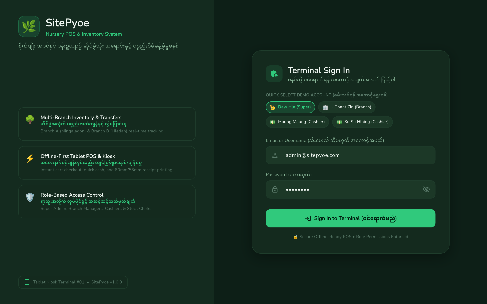
အသုံးပြုပုံ အဆင့်ဆင့်
- အက်ပလီကေးရှင်းကို စတင်ဖွင့်လှစ်သည့်အခါ Login မျက်နှာပြင်ကို တွေ့မြင်ရမည်ဖြစ်ပါသည်။
- စနစ်တွင် လွယ်ကူလျင်မြန်စွာ စမ်းသပ်နိုင်ရန်အတွက် Demo Accounts များ ကြိုတင်ထည့်သွင်းပေးထားပါသည်-
- ဒေါ်လှ (Daw Hla): Super Admin (စနစ်တစ်ခုလုံးကို အပြည့်အဝ စီမံခန့်ခွဲနိုင်သူ)
- ဦးသန့်ဇင် (U Thant Zin): Branch Manager (ဆိုင်ခွဲမန်နေဂျာ - ရန်ကုန်ဆိုင်ခွဲ)
- မောင်မောင် (Maung Maung): Cashier (အရောင်းဝန်ထမ်း - ရန်ကုန်ဆိုင်ခွဲ)
- စုစုလှိုင် (Su Su Hlaing): Cashier (အရောင်းဝန်ထမ်း - မန္တလေးဆိုင်ခွဲ)
- မိမိဝင်ရောက်လိုသော အကောင့်အမည်ကတ်ပြားပေါ်သို့ နှိပ်လိုက်ရုံဖြင့် အမည်သည် အလိုအလျောက် ရွေးချယ်ပြီး ဖြစ်သွားပါမည်။
- ပုံသေ PIN နံပါတ်ဖြစ်သော
1234ကို ရိုက်ထည့်ပြီး "လော့ဂ်အင် ဝင်မည်" ခလုတ်ကို နှိပ်ပါ။
၃. အရောင်းကောင်တာ (POS Terminal)
အရောင်းကောင်တာမျက်နှာပြင်သည် အရောင်းဝန်ထမ်းများ မြန်ဆန်သွက်လက်စွာ ပစ္စည်းရွေးချယ်ပြီး ဘောက်ချာဖွင့်နိုင်ရန် စီစဉ်ထားပါသည်။
၃.၁ ပစ္စည်းရွေးချယ်ခြင်းနှင့် အုပ်စုခွဲခြင်း
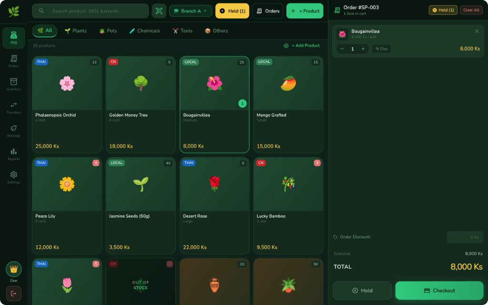
- အမျိုးအစား ခေါင်းစဉ်များ (Category Chips):
- အပင်များ (Plants): နှစ်ရှည်အလှပင်၊ နှစ်ရှည်အသီးပင်၊ Indoor ပင်၊ သစ်ခွ၊ မျိုးစေ့၊ အထွေထွေ
- ပန်းအိုးများ (Pots): ကြွေအိုး၊ ကော်အိုး၊ ဘွန်စိုင်း၊ ကွန်ကရစ်၊ စဉ့်အိုး၊ မြေအိုး
- ဆေးနှင့် မြေသြဇာ (Chemicals): အမြစ်ဆေး၊ အပွင့်ဆေး၊ ၁၅-၁၆ ပတ်လည်၊ မြေဆွေး
- ကိရိယာများ (Tools): ရေဖျန်းခေါင်း၊ ညှပ်ကတ်ကြေး၊ ဂေါ်ပြား
- နိုင်ငံ/ဒေသ ခွဲခြားမှု (Origin Filter):
အားလုံး (All)၊ယိုးဒယား (Thai)၊တရုတ် (CN)၊ပြည်တွင်း (Local)ခလုတ်များဖြင့် တစ်ချက်နှိပ်ရုံဖြင့် သီးခြားရှာဖွေနိုင်ပါသည်။
- ရှာဖွေခြင်း (Search & Barcode):
- အပေါ်ဘက်ရှိ ရှာဖွေရေးဘားတွင် အပင်အမည် (သို့) SKU/Barcode နံပါတ်ရိုက်ထည့်၍ ရှာဖွေနိုင်ပါသည်။
၃.၂ ခြင်းတောင်းတွင်း ပစ္စည်းထည့်သွင်းခြင်းနှင့် လျှော့ဈေးပေးခြင်း
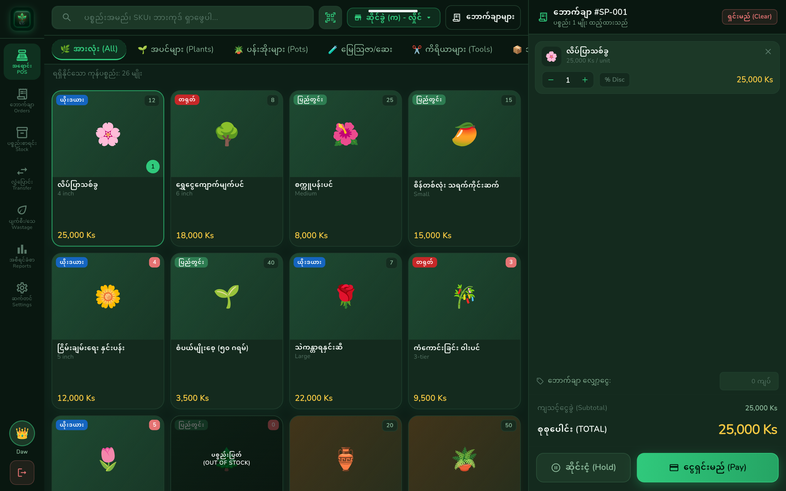
- ကုန်ပစ္စည်းကတ်ပြားပေါ်သို့ နှိပ်လိုက်ပါက ညာဘက်ရှိ လက်ရှိခြင်းတောင်း (Current Cart) ထဲသို့ ချက်ချင်းရောက်ရှိသွားမည်ဖြစ်ပါသည်။
- အရေအတွက် အတိုးအလျှော့ ပြုလုပ်လိုပါက
+နှင့်-ခလုတ်များကို အသုံးပြုနိုင်ပါသည်။ - အကယ်၍ ပစ္စည်းတစ်ခုကို ပြန်လည်ဖျက်လိုပါက အမှိုက်ပုံးပုံစံ အနီရောင်ခလုတ်ကို နှိပ်ပါ။
- လျှော့ဈေး (Discount):
- ခြင်းတောင်းအောက်ခြေရှိ Discount % ခလုတ်ကို နှိပ်၍ ဘောက်ချာတစ်ခုလုံးအပေါ် ရာခိုင်နှုန်းဖြင့် လျှော့ဈေး ပေးနိုင်ပါသည်။
- ဘောက်ချာခေတ္တဆိုင်းငံ့ခြင်း (Hold Order):
- ဝယ်သူမှ ပစ္စည်းထပ်မံရွေးချယ်နေစဉ် အခြားဝယ်သူအား အရင်ရောင်းပေးလိုပါက "ဆိုင်းငံ့မည် (Hold Order)" ခလုတ်ကို နှိပ်ထားနိုင်ပါသည်။
၄. ငွေပေးချေမှုနှင့် ဘောက်ချာထုတ်ယူခြင်း (Checkout & Thermal Printing)
၄.၁ ငွေပေးချေမှုစနစ် (Payment Modal)
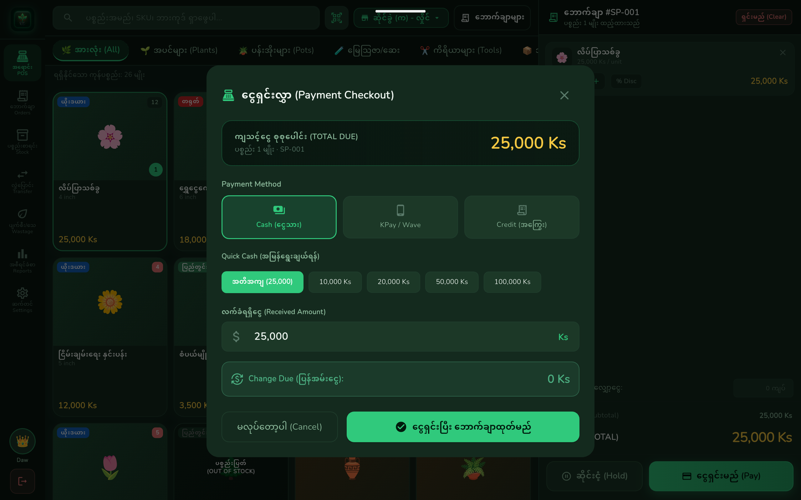
ခြင်းတောင်းရှိ "ငွေရှင်းမည် (Pay)" ခလုတ်ကို နှိပ်လိုက်ပါက ငွေပေးချေမှုဆိုင်ရာ ရွေးချယ်စရာများ ပေါ်လာမည်ဖြစ်ပါသည်-
- ငွေပေးချေနည်းလမ်း အမျိုးအစားများ:
- ငွေသား (Cash): ဝယ်သူထံမှ လက်ခံရရှိသော ငွေပမာဏကို ရိုက်ထည့်နိုင်သလို အမြန်နှိပ်နိုင်သော ငွေစက္ကူခလုတ်များ (
25,000,50,000,100,000 Ks) ကိုလည်း အသုံးပြုနိုင်ပါသည်။ စနစ်မှ ပြန်အမ်းငွေ (Change) ကို တိကျစွာ တွက်ချက်ပေးပါသည်။ - မိုဘိုင်းဘဏ်စနစ် (KPay / Wave): QR Code ဖြင့် ပေးချေခြင်း (သို့) Transaction ID ရိုက်ထည့်၍ မှတ်သားနိုင်ပါသည်။
- အကြွေး (Credit): ပုံမှန်ဖောက်သည်များအတွက် အကြွေးမှတ်တမ်းထားရှိပြီး ပစ္စည်းထုတ်ပေးနိုင်ပါသည်။
- ငွေသား (Cash): ဝယ်သူထံမှ လက်ခံရရှိသော ငွေပမာဏကို ရိုက်ထည့်နိုင်သလို အမြန်နှိပ်နိုင်သော ငွေစက္ကူခလုတ်များ (
- ဝယ်သူအချက်အလက်ကို
ဧည့်သည်ဝယ်သူ (Walk-in Customer)အဖြစ် ထားရှိနိုင်သလို အမည်နှင့် ဖုန်းနံပါတ် သီးခြားထည့်သွင်း၍လည်း မှတ်သားနိုင်ပါသည်။ - အချက်အလက်များ ပြည့်စုံပါက "ငွေလက်ခံပြီး ဘောက်ချာထုတ်မည်" ခလုတ်ကို နှိပ်ပါ။
၄.၂ အပူပေး ပရင်တာ ဘောက်ချာပုံစံ (ESC/POS Thermal Receipt)
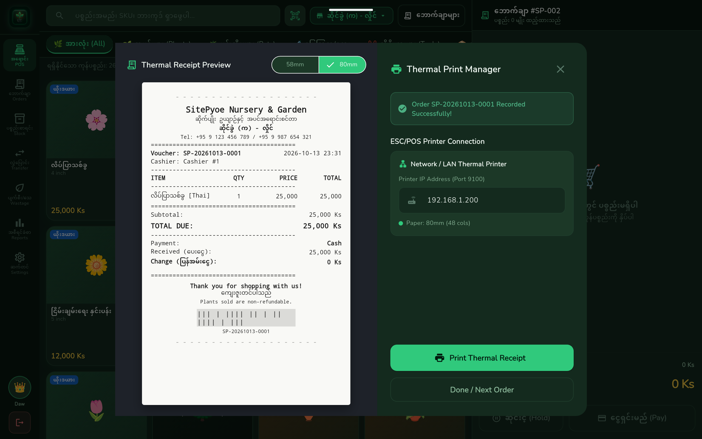
စနစ်တွင် စိုက်ပျိုးရေးဆိုင်များ အသုံးပြုလေ့ရှိသော အပူပေးဘောက်ချာစက် (Thermal Receipt Printer) များနှင့် တိုက်ရိုက်ချိတ်ဆက်နိုင်သော Preview စနစ် ပါဝင်ပါသည်-
- စက္ကူဆိုဒ် ရွေးချယ်မှု: 58mm (စက္ကူအသေး) နှင့် 80mm (စက္ကူအကြီး) စိတ်ကြိုက်ပြောင်းလဲနိုင်ခြင်း။
- ESC/POS Network Print ချိတ်ဆက်မှု: Wi-Fi (သို့) LAN ကြိုးဖြင့် ချိတ်ဆက်ထားသော Receipt Printer ၏ IP Address (ဥပမာ
192.168.1.200:9100) ကို ထည့်သွင်း၍ တိုက်ရိုက် Print ထုတ်နိုင်ခြင်း။ - ဘောက်ချာပါ အချက်အလက်များ: ဆိုင်အမည်၊ ဆိုင်ခွဲ၊ ဘောက်ချာနံပါတ်၊ နေ့စွဲအချိန်၊ ရောင်းချသူဝန်ထမ်း၊ ဝယ်ယူသည့် ပစ္စည်းအမည်များနှင့် စုစုပေါင်းကျသင့်ငွေ၊ ပေးငွေနှင့် ပြန်အမ်းငွေများကို သပ်ရပ်စွာ ပုံနှိပ်ပေးပါသည်။
၅. အရောင်းဘောက်ချာမှတ်တမ်းများ (Order History & Reprint)
ဘယ်ဘက်မီနူးရှိ "ဘောက်ချာမှတ်တမ်းများ (Orders)" ကို နှိပ်ပါက ယခင်ရောင်းချခဲ့သော ဘောက်ချာအားလုံးကို တွေ့မြင်နိုင်ပါသည်။
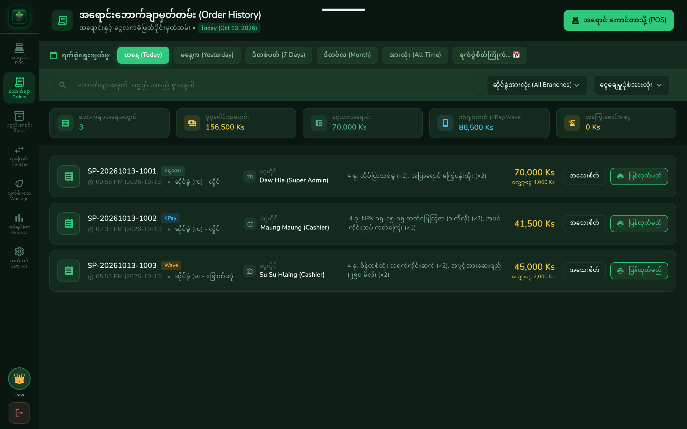
အဓိက လုပ်ဆောင်ချက်များ
- ထိပ်တန်းအကျဉ်းချုပ် ကတ်ပြားများ (KPI Cards):
- စုစုပေါင်း ဘောက်ချာစောင်ရေ: ယနေ့ရောင်းချခဲ့ရသော အရေအတွက်
- စုစုပေါင်း အရောင်းပမာဏ: ယနေ့ရရှိသော စုစုပေါင်းငွေကျပ်
- ပျမ်းမျှဘောက်ချာတန်ဖိုး: ဘောက်ချာတစ်စောင်လျှင် ပျမ်းမျှကျသင့်ငွေ
- အချိန်ကာလအလိုက် စစ်ထုတ်ခြင်း (Date Filters):
ယနေ့ (Today)၊ယမန်နေ့ (Yesterday)၊ပြီးခဲ့သော ၇ ရက် (Last 7 Days)၊ဤလ (This Month)စသည်ဖြင့် စစ်ထုတ်ကြည့်ရှုနိုင်ပါသည်။
- အသေးစိတ်ကြည့်ရှုခြင်း (View Details):
- ဘောက်ချာတစ်ခုချင်းစီ၏ အသေးစိတ်ဝယ်ယူမှုစာရင်းကို ကြည့်ရှုလိုပါက "အသေးစိတ်" ခလုတ်ကို နှိပ်ပါ။
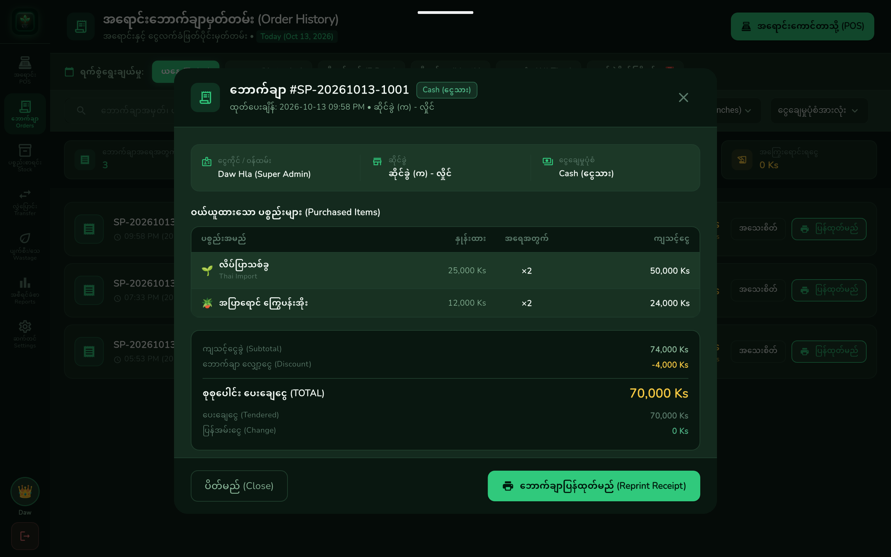
- ဘောက်ချာပြန်လည်ထုတ်ပေးခြင်း (Reprint Voucher):
- ဝယ်သူမှ ဘောက်ချာပျောက်ဆုံး၍ဖြစ်စေ၊ ထပ်မံတောင်းခံ၍ဖြစ်စေ "ပြန်ထုတ်မည် (Reprint)" ခလုတ်ကို နှိပ်ရုံဖြင့် မူရင်းဘောက်ချာကို ချက်ချင်း ပြန်လည် Print ထုတ်ပေးနိုင်ပါသည်။
၆. ကုန်ပစ္စည်းစာရင်းနှင့် စတော့စီမံခန့်ခွဲမှု (Inventory Management)
ဆိုင်တွင်ရှိသော အပင်များ၊ ပန်းအိုးများနှင့် မြေသြဇာဆေးဝါးများ၏ လက်ကျန်အရေအတွက်ကို အချိန်နှင့်တပြေးညီ သိရှိနိုင်ရန် ဆောင်ရွက်ပေးထားပါသည်။
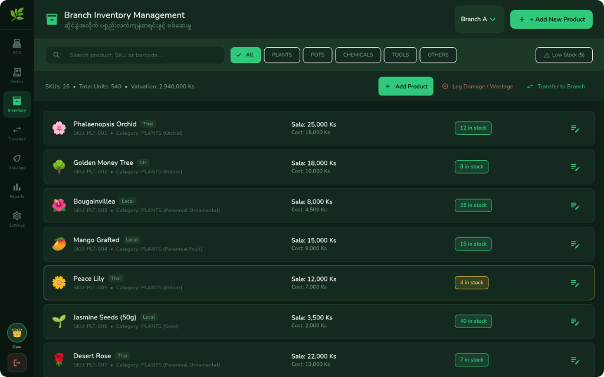
၆.၁ စတော့စာရင်း စိစစ်ခြင်း
- ဆိုင်ခွဲရွေးချယ်မှု:
ရန်ကုန် ပင်မဆိုင်ခွဲနှင့်မန္တလေး ဆိုင်ခွဲတို့၏ စတော့စာရင်းကို သီးခြားစီ စစ်ဆေးနိုင်ပါသည်။ - စတော့နည်းနေသော ပစ္စည်းများ သတိပေးချက် (Low Stock Warning): သတ်မှတ်ထားသော အနည်းဆုံးအရေအတွက်အောက် လျော့နည်းသွားပါက အနီရောင် Warning Chip လေးများဖြင့် ထင်ရှားစွာ သတိပေးပါသည်။
- စတော့အရေအတွက် အမြန်ပြင်ဆင်ခြင်း: စာရင်းစစ်သည့်အခါ ပစ္စည်းစာရင်းဘေးရှိ
+နှင့်-ခလုတ်များကို အသုံးပြု၍ စတော့အတင်အချ ချက်ချင်း ပြုလုပ်နိုင်ပါသည်။
၆.၂ ပစ္စည်းအသစ်ထည့်သွင်းခြင်းနှင့် ပြင်ဆင်ခြင်း (Add / Edit Product)
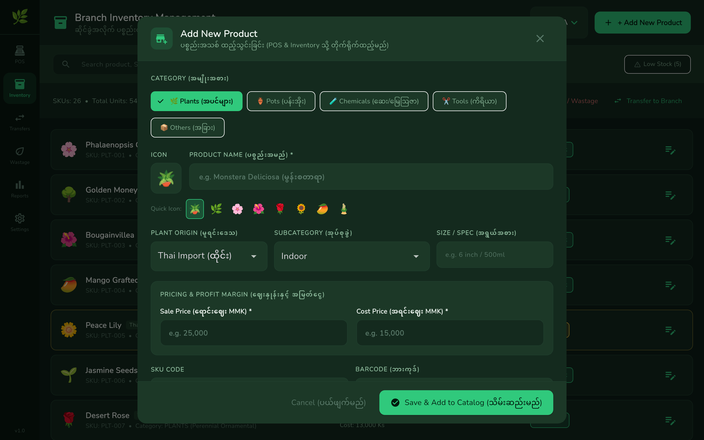
ပစ္စည်းအသစ်ထည့်ရန် (သို့) ရှိပြီးသားပစ္စည်းကို အသေးစိတ်ပြင်ဆင်ရန်အတွက် အောက်ပါအချက်အလက်များကို ထည့်သွင်းနိုင်ပါသည်-
- အဓိကအမျိုးအစား (Main Category): အပင်များ၊ ပန်းအိုး၊ ဆေးနှင့် မြေသြဇာ၊ ကိရိယာ စသည်ဖြင့် ရွေးချယ်ပါ။
- အမျိုးအစားခွဲ (Subcategory):
- ဥပမာ -
သစ်ခွ (Orchids)၊နှစ်ရှည်အလှပင်၊ကြွေအိုးစသည်ဖြင့် မိမိသတ်မှတ်ထားသော အုပ်စုကို ရွေးချယ်ပါ။
- ဥပမာ -
- မူရင်းဒေသ/တင်သွင်းရာနိုင်ငံ (Plant Origin):
ယိုးဒယား Import၊တရုတ် Import(သို့)ပြည်တွင်း (Local)ရွေးချယ်နိုင်ပါသည်။
- ပစ္စည်းအမည်နှင့် အရွယ်အစား (Name & Spec): ပစ္စည်းအမည် (ဥပမာ - လိပ်ပြာသစ်ခွ) နှင့် အိုးအရွယ်အစား (ဥပမာ - 8 လက်မအိုး) ရိုက်ထည့်ပါ။
- အရင်းဈေးနှင့် ရောင်းဈေး (Cost Price & Sale Price):
- ဝယ်ရင်းဈေး (Cost Price): ပစ္စည်းဝယ်ယူရရှိသော ဈေးနှုန်း
- ရောင်းဈေး (Sale Price): ဖောက်သည်အား ရောင်းချမည့် ဈေးနှုန်း
- အမြတ်ရာခိုင်နှုန်း (Profit Margin %): ရောင်းဈေးနှင့် ဝယ်ရင်းဈေး ထည့်သွင်းလိုက်သည်နှင့် စနစ်မှ မျှော်မှန်းအမြတ်ရာခိုင်နှုန်းကို အလိုအလျောက် တွက်ချက်ပြသပေးပါသည်။
- SKU နှင့် Barcode: ပစ္စည်းကုဒ်နံပါတ် သတ်မှတ်ပေးနိုင်ပါသည်။
- ဓါတ်ပုံနှင့် သင်္ကေတ (Custom Image & Icon Selection):
- Gallery မှ ပုံတင်ခြင်း (Custom Image): စက်အတွင်း (Device Gallery / Camera) မှ မိမိစိတ်ကြိုက် အပင်ပုံစစ်စစ်များကို တိုက်ရိုက်ရွေးချယ်တင်သွင်းနိုင်ပါသည်။ ရွေးချယ်ထားသော ပုံကို အစမ်းကြည့်ရှုနိုင်ခြင်းနှင့် မလိုချင်ပါက ဖျက်ပစ်နိုင်ခြင်း (Remove) တို့ကို ပြုလုပ်နိုင်ပါသည်။
- သင်္ကေတ ရွေးချယ်ခြင်း (Preset Icons): ဓါတ်ပုံမရှိပါက သစ်ပင်၊ ပန်းအိုး၊ ဆေးခွက် စသည့် Built-in သင်္ကေတများထဲမှ အလွယ်တကူ ရွေးချယ်အသုံးပြုနိုင်ပါသည်။
၇. ဆိုင်ခွဲအချင်းချင်း ပစ္စည်းလွှဲပြောင်းမှု (Branch Transfers)
ဆိုင်ခွဲတစ်ခုမှ အခြားဆိုင်ခွဲတစ်ခုသို့ အပင်များနှင့် ပစ္စည်းများ လွှဲပြောင်းပို့ဆောင်ရာတွင် စာရင်းမပျောက်စေရန် စနစ်တကျ ထိန်းချုပ်ပေးပါသည်။
၇.၁ လွှဲပြောင်းမှု အခြေအနေ (Transfer Status)
- ပို့ဆောင်ဆဲ (In-Transit): ပစ္စည်းပို့လိုက်သော်လည်း လက်ခံမည့်ဆိုင်ခွဲသို့ မရောက်သေးသော အခြေအနေဖြစ်ပြီး စတော့စာရင်းမှ ယာယီနှုတ်ယူထားပါသည်။
- လက်ခံရရှိပြီး (Received): လက်ခံမည့်ဆိုင်ခွဲမှ ပစ္စည်းများ စစ်ဆေးပြီး "ပစ္စည်းလက်ခံအတည်ပြုမည် (Confirm Receipt)" ခလုတ်ကို နှိပ်လိုက်ပါက လက်ခံဆိုင်ခွဲ၏ စတော့ထဲသို့ အလိုအလျောက် ပေါင်းထည့်ပေးပါသည်။
၇.၂ လွှဲပြောင်းလွှာ အသစ်ပြုလုပ်ခြင်း (Create Transfer)
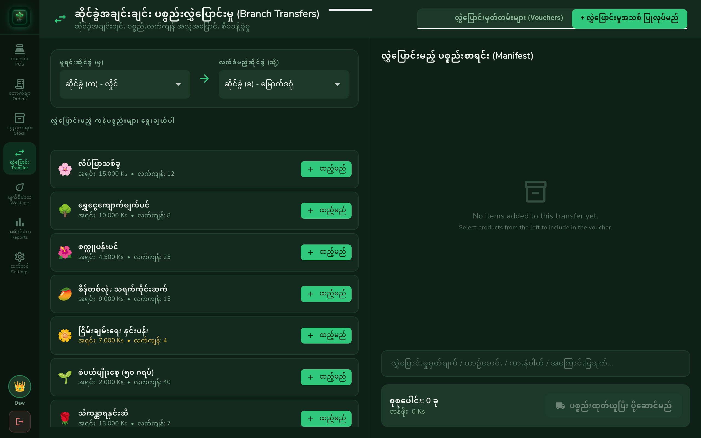
- မူရင်းဆိုင်ခွဲ (Source Branch) နှင့် လက်ခံမည့်ဆိုင်ခွဲ (Destination Branch) ကို ရွေးချယ်ပါ။
- လွှဲပြောင်းလိုသော ပစ္စည်းကို ရှာဖွေပြီး အရေအတွက် ရိုက်ထည့်ပါ။ စနစ်မှ ပစ္စည်းရွေးချယ်စဉ် မူရင်းဆိုင်တွင် လက်ကျန်အရေအတွက် မည်မျှရှိသည်ကို တိုက်ရိုက်ဖော်ပြပေးပါသည်။
- ကားသမားအမည်၊ ဖုန်းနံပါတ် (သို့) မှတ်ချက်များကို ရိုက်ထည့်ပြီး "လွှဲပြောင်းမှု အတည်ပြုမည်" ကို နှိပ်ပါ။
၈. အပင်သေဆုံးမှုနှင့် ပျက်စီးလေလွင့်မှု မှတ်တမ်း (Wastage & Mortality Tracking)
သစ်ပင်ပန်းမန်လုပ်ငန်းများတွင် အရေးအကြီးဆုံးဖြစ်သော သဘာဝအရ သေဆုံးပျက်စီးမှုများကြောင့် အရင်းအနှီး ဆုံးရှုံးမှုကို စာရင်းစစ်ဆေးနိုင်ရန် ဤစနစ်ကို ထည့်သွင်းထားပါသည်။
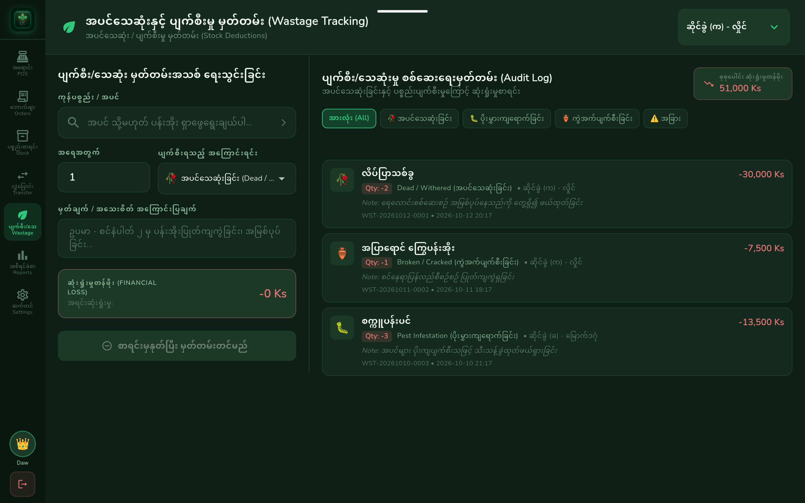
အဓိက အင်္ဂါရပ်များ
- စုစုပေါင်း ဆုံးရှုံးမှုတန်ဖိုး စာရင်းစစ် (Total Loss in MMK):
- ပျက်စီးသွားသော ပစ္စည်းများ၏ မူလဝယ်ရင်းဈေး (Cost Price) အပေါ် မူတည်၍ လုပ်ငန်းမှ ငွေကြေးမည်မျှ ဆုံးရှုံးသွားသည်ကို စုစုပေါင်း တွက်ချက်ပြသပေးပါသည် (ဥပမာ -
-၅၁,၀၀၀ ကျပ်)။
- ပျက်စီးသွားသော ပစ္စည်းများ၏ မူလဝယ်ရင်းဈေး (Cost Price) အပေါ် မူတည်၍ လုပ်ငန်းမှ ငွေကြေးမည်မျှ ဆုံးရှုံးသွားသည်ကို စုစုပေါင်း တွက်ချက်ပြသပေးပါသည် (ဥပမာ -
- ပျက်စီးရသည့် အကြောင်းအရင်းများ (Wastage Reasons):
အပင်သေဆုံးခြင်း (Plant Mortality)ပိုးမွှားကျရောက်ခြင်း (Pest Infestation)ကွဲအက်ပျက်စီးခြင်း (Broken / Damaged Pots)ရက်လွန်မြေဆွေး/ဆေးဝါး ပျက်စီးခြင်း (Expired Chemicals)
- စာရင်းသွင်းခြင်း (Log Damage):
- ပျက်စီးသွားသော ပစ္စည်း၊ အရေအတွက်နှင့် အကြောင်းအရင်းကို မှတ်တမ်းတင်လိုက်သည်နှင့် စတော့စာရင်းမှ ချက်ချင်း အလိုအလျောက် နှုတ်ပယ်ပေးပြီး လစဉ်အရှုံးအမြတ်စာရင်းတွင် ဆုံးရှုံးစရိတ်အဖြစ် ထည့်သွင်းတွက်ချက်ပေးပါသည်။
၉. လုပ်ငန်းသုံး အစီရင်ခံစာနှင့် ဘဏ္ဍာရေးစာရင်းများ (Reports & Analytics)
လုပ်ငန်းရှင်များအနေဖြင့် ဆိုင်၏ အရောင်းအခြေအနေ၊ ရင်းနှီးငွေနှင့် အသားတင်အမြတ်ငွေများကို မျက်ခြည်မပြတ် စောင့်ကြည့်နိုင်ရန် အစီရင်ခံစာ ကဏ္ဍ (၆) မျိုးဖြင့် ဖွဲ့စည်းထားပါသည်။
၉.၁ စာရင်းချုပ်ခြုံငုံသုံးသပ်ချက် (Overview)
- စုစုပေါင်း အရောင်းဝင်ငွေ (Gross Revenue): ရောင်းချရရှိသော စုစုပေါင်းငွေ
- ကုန်ကျစရိတ် (Cost of Goods Sold - COGS): ရောင်းချခဲ့ရသော ပစ္စည်းများ၏ မူရင်းဝယ်ရင်းဈေး
- စုစုပေါင်း အကြမ်းဖျင်းအမြတ် (Gross Profit): အရောင်းဝင်ငွေထဲမှ ကုန်ကျစရိတ်ကို နှုတ်ထားသောငွေ (ဥပမာ - ၃၉.၁%)
- ပျက်စီးဆုံးရှုံးမှုစရိတ် (Wastage Loss): သေဆုံးပျက်စီးသွားသော အပင်များ၏ ဆုံးရှုံးငွေ (ဥပမာ -
-၅၁,၀၀၀ ကျပ်) - အသားတင်အမြတ် (Net Profit): ဆုံးရှုံးစရိတ်များ နှုတ်ပြီးနောက် လုပ်ငန်းရှင် လက်ထဲ အမှန်တကယ် ကျန်ရှိသော အမြတ်ငွေ (ဥပမာ - ၂၂.၈%)
- အမျိုးအစားအလိုက် အမြတ်ရာခိုင်နှုန်း (Category Margin Breakdown): အပင်များ၊ ပန်းအိုးများနှင့် ဆေးဝါးများအနက် မည်သည့်အမျိုးအစားက အမြတ်ရာခိုင်နှုန်း အများဆုံး ရရှိသည်ကို ဇယားဖြင့် ပြသပေးခြင်း။
၉.၂ အရောင်းစာရင်း (Sales Transactions)
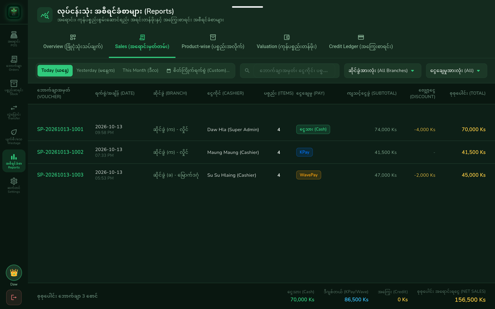
- ဘောက်ချာတစ်ခုချင်းစီအလိုက် ရောင်းချခဲ့သော ဆိုင်ခွဲ၊ နေ့စွဲအချိန်၊ ပေးချေသည့်စနစ် (Cash / KPay / Credit) နှင့် စုစုပေါင်း ပမာဏများကို ဇယားကွက်ဖြင့် စစ်ဆေးနိုင်ပါသည်။
- လိုအပ်သော ဆိုင်ခွဲ (သို့) ငွေပေးချေမှုပုံစံအလိုက် ခွဲခြားကြည့်ရှုနိုင်ပါသည်။
၉.၃ အဝယ်စာရင်း (Purchases Report)
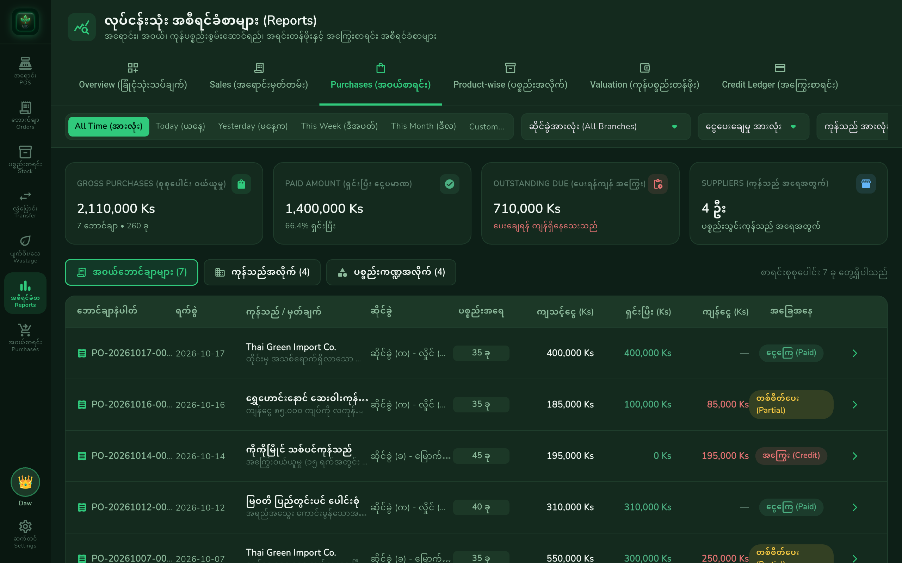
- ဝယ်ယူမှု အကျဉ်းချုပ် (KPIs): စုစုပေါင်း ဝယ်ယူမှု (Gross Purchases)၊ ရှင်းပြီး ငွေပမာဏ (Paid Amount)၊ ပေးရန်ကျန် အကြွေး (Outstanding Due) နှင့် ပစ္စည်းသွင်းကုန်သည် အရေအတွက် (Suppliers Count) တို့ကို ထိပ်ဆုံးတွင် အချိန်နှင့်တပြေးညီ တွက်ချက်ပြသပေးပါသည်။
- အဝယ်ဘောင်ချာများ စာရင်း (Vouchers Table): ဘောင်ချာနံပါတ်၊ ဝယ်ယူသည့်ရက်စွဲ၊ ကုန်သည်အမည်၊ သွင်းသည့်ဆိုင်ခွဲ၊ ပစ္စည်းအရေအတွက်၊ စုစုပေါင်းကျသင့်ငွေ၊ ရှင်းပြီးငွေ၊ ကျန်ငွေနှင့် ငွေပေးချေမှုအခြေအနေ (
ငွေကြေ (Paid)၊တစ်စိတ်ပေး (Partial)၊အကြွေး (Credit)) တို့ကို စစ်ဆေးနိုင်ပြီး ဘောင်ချာအတန်းကို နှိပ်ပါက ဘောင်ချာအသေးစိတ် (Detail Dialog) ကို ဖွင့်ကြည့်နိုင်ပါသည်။ - ကုန်သည်အလိုက် စာရင်း (By Vendor): ပစ္စည်းသွင်းကုန်သည်တစ်ဦးချင်းစီအလိုက် စုစုပေါင်း ဝယ်ယူမှု၊ ရှင်းပြီးငွေနှင့် ပေးရန်ကျန်ငွေများကို ကတ်ပြားများဖြင့် ရှင်းလင်းစွာ ခွဲခြမ်းစိတ်ဖြာနိုင်ပါသည်။
- ပစ္စည်းကဏ္ဍအလိုက် အဝယ်စရိတ် (By Category): အပင်များ၊ ဆေး/မြေဩဇာ၊ ပန်းအိုးများနှင့် ကိရိယာများအနက် မည်သည့်ပစ္စည်းကဏ္ဍတွင် အဝယ်စရိတ် အများဆုံး ရင်းနှီးထားသည်ကို ရာခိုင်နှုန်း ဝေစုများဖြင့် လေ့လာနိုင်ပါသည်။
- စစ်ထုတ်နိုင်သော စနစ်များ (Filters): နေ့စွဲ (ယနေ့၊ မနေ့က၊ ဒီအပတ်၊ ဒီလ၊ ကာလအပိုင်းအခြား)၊ ဆိုင်ခွဲ၊ ငွေပေးချေမှု အခြေအနေနှင့် ကုန်သည်အလိုက် အလွယ်တကူ ရှာဖွေနိုင်ပါသည်။
၉.၄ ပစ္စည်းအလိုက် အမြတ်အစွန်း (Product-wise Sales & Profit)
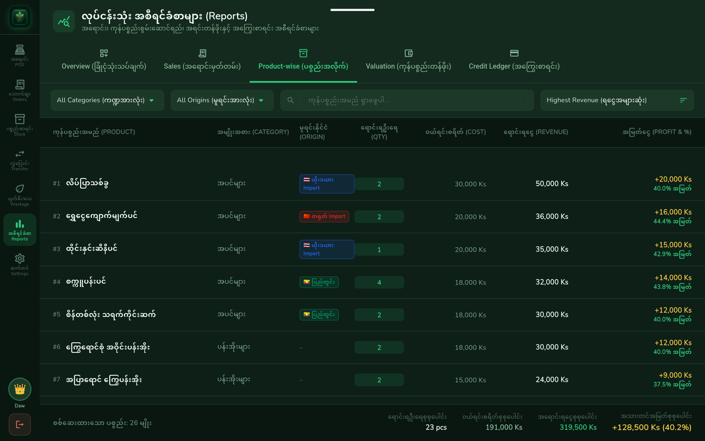
- မည်သည့်အပင် (သို့) ပစ္စည်းက အရေအတွက် မည်မျှ ရောင်းချခဲ့ရသည်ကို ဖော်ပြပေးပါသည်။
- ပစ္စည်းတစ်ခုချင်းစီ၏ စုစုပေါင်းအရောင်းငွေ၊ ကုန်ကျစရိတ်နှင့် ရရှိသော အသားတင်အမြတ် (Profit) နှင့် အမြတ်ရာခိုင်နှုန်း (Margin %) ကို တစ်ခုချင်းစီ အသေးစိတ် နှိုင်းယှဉ်ပြသပေးပါသည်။
၉.၅ လက်ကျန်စတော့တန်ဖိုး (Stock Valuation)
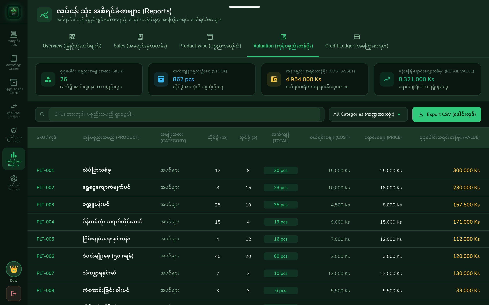
- လက်ရှိဆိုင်တွင် ကျန်ရှိနေသော ပစ္စည်းအားလုံး၏ မူရင်းရင်းနှီးမြှုပ်နှံငွေတန်ဖိုး (Total Cost Asset Value - ဥပမာ ၄,၉၅၄,၀၀၀ ကျပ်) နှင့် ရောင်းချပါက ရရှိမည့် စုစုပေါင်း ရောင်းဈေးတန်ဖိုး (Retail Value - ဥပမာ ၈,၃၂၁,၀၀၀ ကျပ်) ကို တိုက်ရိုက်တွက်ချက်ပြသပေးပါသည်။
- ပစ္စည်းအားလုံး ရောင်းထွက်ပါက ရရှိနိုင်မည့် မျှော်မှန်းအမြတ်ငွေ (Unrealized Profit) ကို ဖော်ပြပေးပြီး Excel/CSV ဖိုင်အဖြစ် ဒေါင်းလုဒ်ရယူနိုင်ပါသည်။
၉.၆ အကြွေးစာရင်း (Credit Ledger)
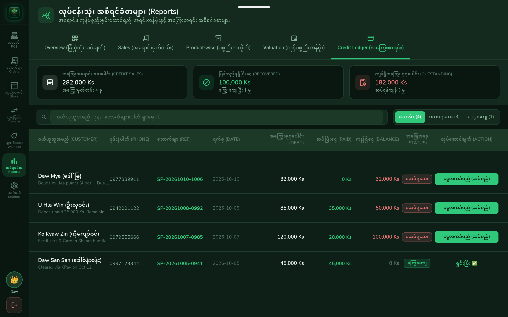
- အကြွေးဖြင့် ဝယ်ယူသွားသော ဖောက်သည်များ၏ အမည်၊ ဖုန်းနံပါတ်၊ ကျန်ရှိသောအကြွေးပမာဏနှင့် နောက်ဆုံးပေးချေခဲ့သော နေ့စွဲများကို စနစ်တကျ မှတ်တမ်းတင်ပေးထားပါသည်။
- ဖောက်သည်မှ အကြွေးငွေ လာရောက်ဆပ်သည့်အခါ "အကြွေးဆပ်မည် (Collect)" ခလုတ်ကို နှိပ်၍ တစ်စိတ်တစ်ပိုင်း (သို့) အပြေအကျေ စာရင်းရှင်းလင်းနိုင်ပါသည်။
၁၀. စနစ်ဆက်တင်များနှင့် ဝန်ထမ်းလုပ်ပိုင်ခွင့်များ (System Settings & Permissions)
၁၀.၁ အမျိုးအစားနှင့် အမျိုးအစားခွဲများ စီမံခြင်း (Category & Subcategory CRUD)
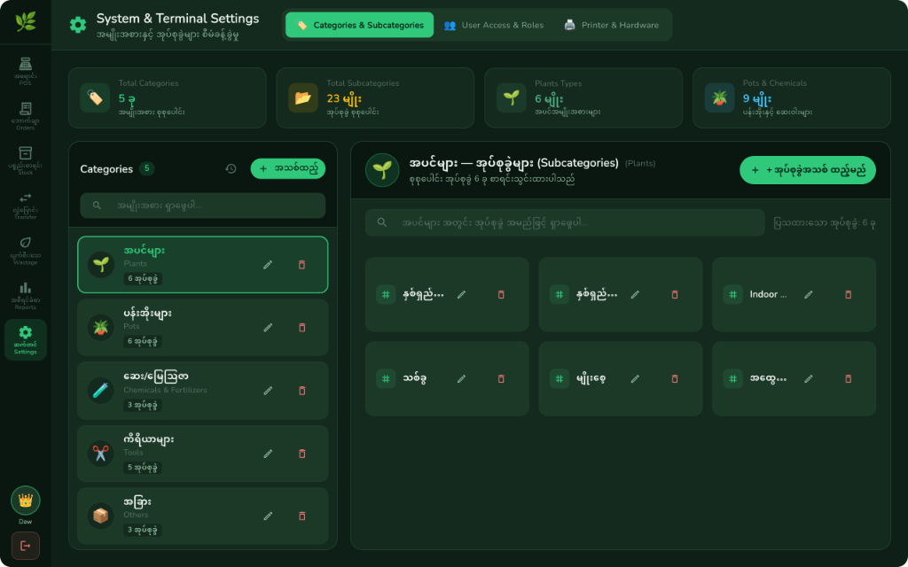
စိုက်ပျိုးရေးဆိုင်၏ လိုအပ်ချက်အရ ပစ္စည်းအမျိုးအစားများကို လွတ်လပ်စွာ ထပ်တိုးခြင်း၊ ပြင်ဆင်ခြင်းနှင့် ဖျက်ပယ်ခြင်း ပြုလုပ်နိုင်ပါသည်-
- ပင်မအမျိုးအစားများ (Main Categories):
အပင်များ၊ပန်းအိုးများ၊ဆေးနှင့် မြေသြဇာ၊ကိရိယာများ၊အထွေထွေစသည်ဖြင့် မိမိစိတ်ကြိုက် အသစ်ထည့်သွင်းနိုင်ပါသည်။
- အမျိုးအစားခွဲများ စီမံခြင်း (Subcategory Management):
- ဥပမာ - အပင်များ အောက်တွင်
နှစ်ရှည်အလှပင်၊နှစ်ရှည်အသီးပင်၊Indoor ပင်၊သစ်ခွ၊မျိုးစေ့၊အထွေထွေဟူ၍ စိတ်ကြိုက်ခွဲခြားနိုင်ခြင်း။ - ပန်းအိုးများ အောက်တွင်
ကြွေအိုး၊ကော်အိုး၊ဘွန်စိုင်း၊ကွန်ကရစ်၊စဉ့်အိုး၊မြေအိုးဟူ၍ ထည့်သွင်းနိုင်ခြင်း။ - ဆေးနှင့် မြေသြဇာ အောက်တွင်
အမြစ်ဆေး၊အပွင့်ဆေး၊၁၅-၁၆ ပတ်လည်ဟူ၍ သတ်မှတ်နိုင်ခြင်း။
- ဥပမာ - အပင်များ အောက်တွင်
- အမျိုးအစားခွဲတစ်ခုချင်းစီကို အမည်ပြင်ဆင်ခြင်း (Edit) သို့မဟုတ် မလိုလားအပ်ပါက ဖျက်ပယ်ခြင်း (Delete) ပြုလုပ်နိုင်ပါသည်။
၁၀.၂ အသုံးပြုသူများနှင့် လုပ်ပိုင်ခွင့်သတ်မှတ်ခြင်း (User Access & Roles)
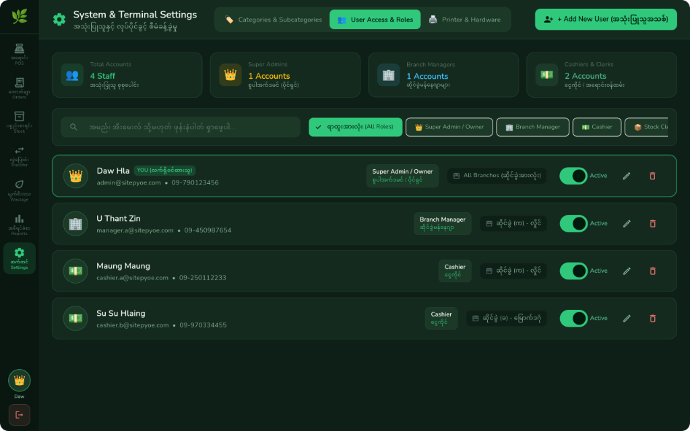
ဆိုင်ခွဲများရှိ ဝန်ထမ်းတစ်ဦးချင်းစီ၏ လုံခြုံရေးနှင့် လုပ်ပိုင်ခွင့်များကို အသေးစိတ် သတ်မှတ်နိုင်ပါသည်-
- ရာထူးအဆင့်ဆင့် သတ်မှတ်ချက်များ:
- Super Admin: စနစ်တစ်ခုလုံး၊ ဈေးနှုန်းများ၊ ဘဏ္ဍာရေးအစီရင်ခံစာများနှင့် ဝန်ထမ်းအကောင့်များကို စီမံနိုင်သူ။
- Branch Manager: ဆိုင်ခွဲစတော့များ၊ ပစ္စည်းလွှဲပြောင်းမှုများနှင့် အရောင်းစာရင်းများကို ကြည့်ရှုစီမံနိုင်သူ။
- Cashier (အရောင်းဝန်ထမ်း): POS အရောင်းကောင်တာနှင့် ဘောက်ချာထုတ်ခြင်းကိုသာ ပြုလုပ်ခွင့်ရှိပြီး အခြားဘဏ္ဍာရေးအစီရင်ခံစာများကို ဝင်ရောက်ခွင့် ကန့်သတ်ထားသူ။
- အကောင့် ဖွင့်/ပိတ် ပြုလုပ်ခြင်း (Active Status Switch): ဝန်ထမ်းအလုပ်ထွက်သွားပါက (သို့) ခွင့်ရက်ဖြစ်ပါက Switch ခလုတ်လေးကို ပိတ်ထားရုံဖြင့် အကောင့်ကို ယာယီပိတ်ထားနိုင်ပါသည်။
- ဆိုင်ခွဲ တာဝန်ပေးအပ်ခြင်း (Branch Assignment): ဝန်ထမ်းတစ်ဦးချင်းစီအား မိမိတာဝန်ကျရာ ဆိုင်ခွဲ (ဥပမာ - ရန်ကုန်ဆိုင်ခွဲ သို့မဟုတ် မန္တလေးဆိုင်ခွဲ) သို့ သီးသန့်တာဝန်ပေးနိုင်ပါသည်။
၁၁. စနစ်မှ ထွက်ခွာခြင်း (Logout)
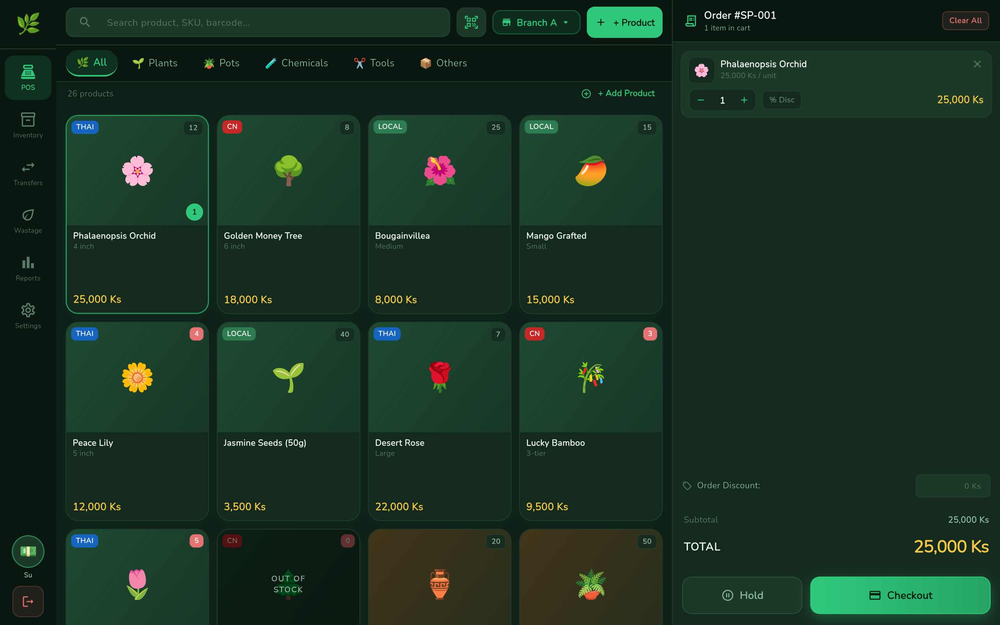
အရောင်းတာဝန်ချိန် ပြီးဆုံးသည့်အခါ (သို့) အခြားဝန်ထမ်းတစ်ဦးသို့ အလှည့်လွှဲပြောင်းသည့်အခါ အောက်ဘက်ရှိ "လော့ဂ်အာဂျတ် (Logout)" ခလုတ်ကို နှိပ်၍ လုံခြုံစွာ ထွက်ခွာနိုင်ပါသည်။ စနစ်မှ အမှန်တကယ် ထွက်ခွာလိုခြင်း ရှိ/မရှိ အတည်ပြုမေးမြန်းပေးပါမည်။
၁၂. ဖောက်သည်များအတွက် စမ်းသပ်အသုံးပြုရန် လမ်းညွှန်ချက် (Client Testing & Offline Demo)
ဖောက်သည်ထံသို့ စနစ်အား အစမ်းပြသရန်အတွက် အင်တာနက် သို့မဟုတ် Backend ဆာဗာ တင်ထားရန် မလိုအပ်ဘဲ အသင့်သုံးစွဲနိုင်ရန် စီစဉ်ထားပါသည်-
- Android Tablet (သို့) ဖုန်းတွင် ထည့်သွင်းခြင်း:
- ဖန်တီးထားသော
app-release.apkကို Android စက်ထဲသို့ ထည့်သွင်း install ပြုလုပ်ပါ။
- ဖန်တီးထားသော
- Demo စမ်းသပ်မှု စီးဆင်းမှု (Recommended Demo Flow):
- အဆင့် ၁:
ဒေါ်လှ (Super Admin)ဖြင့် Login ဝင်ပါ (PIN:1234)။ - အဆင့် ၂: POS တွင်
ယိုးဒယားပင်များနှင့်ပန်းအိုးများကို ရွေးချယ်ပြီး Cart ထဲထည့်ပါ၊ Discount ထည့်ပြီး Cash (သို့) KPay ဖြင့် Checkout လုပ်၍ Receipt Preview စစ်ဆေးပါ။ - အဆင့် ၃:
Ordersတွင် ရောင်းချပြီးသော ဘောက်ချာကို ပြန်လည်ကြည့်ရှုပြီး Reprint စမ်းသပ်ပါ။ - အဆင့် ၄:
Inventoryတွင် အပင်အသစ်တစ်ခုကို အရင်းဈေး၊ ရောင်းဈေးနှင့် Margin % တွက်ချက်၍ ထည့်သွင်းပြသပါ။ - အဆင့် ၅:
Wastageသို့သွား၍ သေဆုံးသွားသော အပင်စာရင်းကို မှတ်တမ်းတင်ပြီး Total Loss ငွေကြေးပြောင်းလဲမှုကို ပြသပါ။ - အဆင့် ၆:
Reportsသို့သွား၍ Gross Profit၊ Wastage Loss နှင့် အသားတင်အမြတ် (Net Profit) များ၊ Stock Valuation လက်ကျန်တန်ဖိုးများကို ရှင်းလင်းပြသပါ။ - အဆင့် ၇:
Settingsသို့သွား၍ အမျိုးအစားခွဲ (Subcategory) အသစ်တစ်ခု ထည့်သွင်းပြသပါ။
- အဆင့် ၁:
SitePyoe Nursery POS System - စိုက်ပျိုးရေးနှင့် ဥယျာဉ်ခြံမြေ အရောင်းဆိုင်များအတွက် အပြည့်စုံဆုံး လက်တွဲဖော်